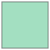
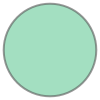
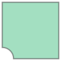
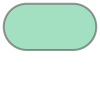

from shapely.geometry import Point, LineString, Polygon
pt = Point(0, 0)
pt
Shapely is a Python library for creating and manipulating geometric objects such as points, lines, and polygons. It offers an intuitive way to work with these shapes within a Cartesian coordinate system. Widely used in spatial analysis, Shapely also underpins other libraries like GeoPandas, which is designed for handling geospatial data.
Why is Shapely useful?
For more comprehensive details, please refer to the Shapely API documentation.
In this lesson, we’ll explore the fundamentals of Shapely and its applications in urban contexts. You’ll learn how to model spatial relationships and perform various geometric operations using this library.
This lesson assumes some familiarity with fundamental GIS concepts. We won’t be covering basics such as coordinate reference systems or spatial predicates in detail. However, if you’ve used tools like QGIS, you’ll find concepts such as spatial types (points, linestrings, polygons) and operations (buffering, predicates) quite familiar.
Shapely uses its geometry module to construct basic geometric shapes.
Points are the most fundamental geometric objects in Shapely, serving as the building blocks for more complex shapes.
from shapely.geometry import Point, LineString, Polygon
pt = Point(0, 0)
pt
Linestrings represent sequences of connected points. You can define them using a series of XY coordinate pairs or a list of Point objects.
line = LineString([(0, 5), (5, 0), (10, 5)])
linePolygons are closed shapes defined by a sequence of coordinates. Similar to linestrings, you can create them from a list of points or coordinate tuples.
poly = Polygon([(0, 0), (0, 10), (10, 10), (10, 0)])
poly
Shapely geometries come with useful properties that provide common information. For instance, you can easily retrieve a polygon’s area:
poly.area100.0Similarly, you can get the length of a linestring:
line.length14.142135623730951Other handy properties include centroids, x and y coordinates, and WKT (Well-Known Text) representations:
poly.centroidpt.x, pt.y(0.0, 0.0)line.wkt'LINESTRING (0 5, 5 0, 10 5)'Shapely supports a range of typical GIS spatial operations and predicates. For example, you can measure the distance between two spatial objects:
pt.distance(line)3.5355339059327378Crucially, Shapely operates using Cartesian coordinates. For accurate distance calculations or predicate operations, ensure your geometries are in a projected coordinate reference system and share the same system. Objects must share the same coordinate system for accurate results.
The Shapely documentation provides comprehensive details on all available operations and predicates. For instance, the geometry.Point page describes everything related to point geometries.
pt_buff = pt.buffer(2)
pt_buff
As an example, the documentation shows that the Point geometry has a buffer method. This method accepts a distance parameter and returns a polygon representing the buffered area.
Common spatial predicates are also readily available. For example, you can use the within method to check if a point is located inside a polygon:
pt.within(poly)FalseIf a point is on a polygon’s boundary, within returns False, but intersects returns True.
poly.intersects(pt)TrueOther common geometric operations include buffer. For instance, let’s create a buffer around a linestring:
line_buff = line.buffer(2)
line_buffYou can use the union method to combine two polygons into a single, unified geometry:
poly2 = Polygon([(5, 5), (5, 15), (15, 15), (15, 5)])
union_poly = poly.union(poly2)
union_polyOperations like difference also behave intuitively, as you might expect from GIS software:
diff_poly = poly.difference(pt_buff)
diff_poly
Some operations offer configurable parameters for finer control. For example, the buffer method includes cap_style and join_style parameters, which allow you to control the appearance of the buffer’s ends and joins around a line.
buffer_round = line.buffer(2, cap_style=1, join_style=1)
buffer_roundShapely’s spatial operations and predicates closely mirror those found in GIS software like QGIS. This means tasks you might perform in a graphical user interface (UI) can often be replicated in Python, and vice-versa. Python becomes particularly advantageous for complex or lengthy workflows, as scripting enables advanced processing that can be cumbersome or difficult to achieve through a UI.
Let’s consider a simple example: modelling streets and checking if they are within a specified distance threshold of particular land uses.
street = LineString([(0, 0), (10, 0)])
street_buffer = street.buffer(5, cap_style=1, join_style=1)
street_buffer
land_use = Point(3, 4)
land_useis_within = land_use.within(street_buffer)
is_withinTruedistance_to_street = land_use.distance(street)
distance_to_street4.0In real-world scenarios, GeoPandas is frequently used for such workflows. It excels at handling multiple features, managing coordinate reference systems, performing file input/output (I/O), and plotting.